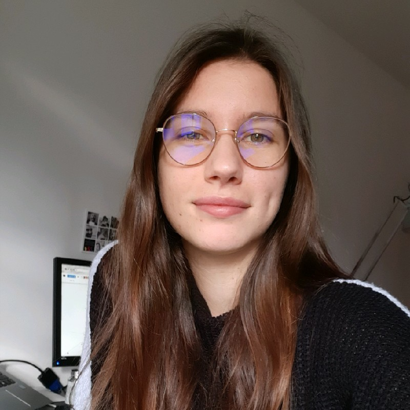

Pauline BODET
Pauline BODET CV

A propos
Bonjour, je m'appelle Pauline j'ai 22 ans. Je suis actuellement en Master 2 de
stratégie et communication digitale à l'IICP. En parallèle, je suis alternante en tant que community manager chez
Brico Dépôt depuis un an.
Formations
2016 : Baccalauréat littéraire - Lycée Jean-Baptiste Corot, Savigny sur Orge (91)
2016 - 2019 : Licence Information et communication - Université Paris 8 - Saint Denis (93)
2020 - 2022 :Master Stratégie et communication digitale - IICP - Paris (75013)
Mes expériences professionnelles
Community manager - Nova IP septembre à décembre 2018
Community manager - Absolutely French janvier à juillet 2020
Community manager - Brico Dépôt septembre 2020 à aujourd'hui
Compétences
Anglais - Niveau B2
Réseaux sociaux- avancé
Suite Office - avancé
Photoshop - débutant
Première Pro - Intermédiaire
Diplômes et certifications
Certification
Certification Google Analytics Débutant
Diplômes
Baccalauréat littéraire spécialité anglais approfondi
Licence Information et Communication mention bien
Mes centres d'intérêt
Minimalisme
Marcher
Faire des sorties en famille